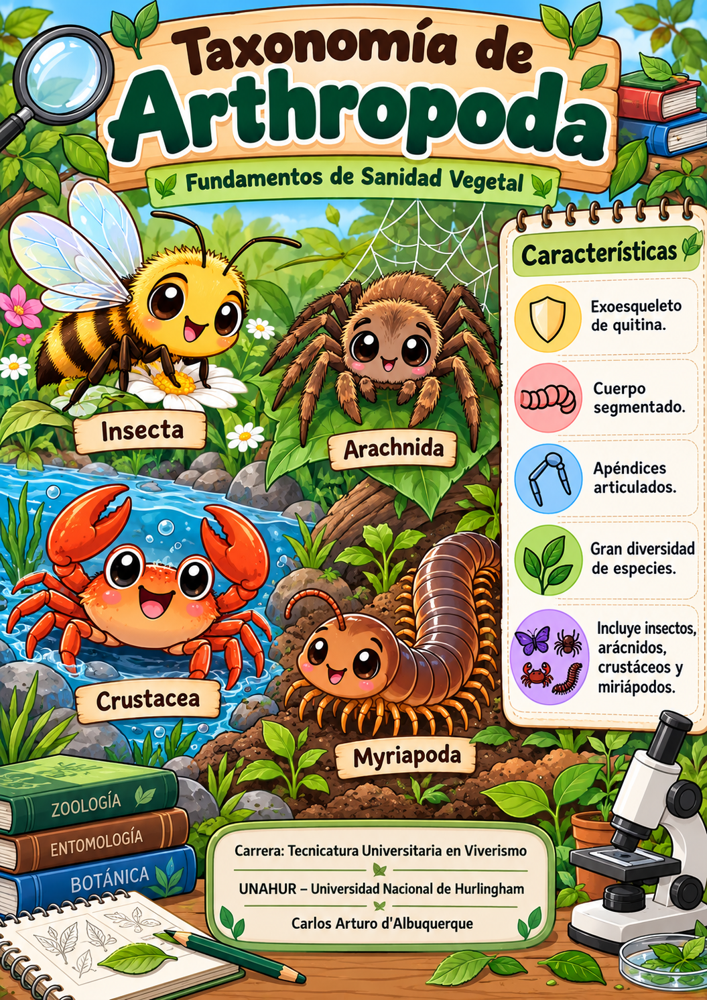

Exoesqueleto de quitina
Una cubierta externa que forma parte de su estructura.
UNAHUR · VIVERISMO · GUÍA DE ESTUDIO
Una pequeña gran aventuraEntre hojas, flores y muchas patas, descubrí qué comparten y qué hace especial a cada grupo.

EL PUNTO DE PARTIDA
Arthropoda pertenece al reino Animalia y es su grupo más diverso. Estas son las tres claves que los reúnen.
Una cubierta externa que forma parte de su estructura.
El cuerpo está organizado en segmentos.
Sus apéndices tienen articulaciones.
01 / EXPLORÁ EL JARDÍN
Elegí un grupo y abrí tu ficha de campo.
02 / MIRÁ LAS DIFERENCIAS
Usá este cuadro para ubicar rápidamente la información de las láminas.
| Grupo | Cuerpo | Patas | Antenas | Ejemplos |
|---|---|---|---|---|
| 🐝 Insecta | Segmentado* | Sin detalle en las láminas | Sin detalle en las láminas | Abeja ilustrada |
| 🕷️ Arachnida | Cefalotórax y abdomen | 4 pares | No poseen | Arañas, escorpiones y ácaros |
| 🦀 Crustacea | Segmentado* | Sin detalle en las láminas | 2 pares | Cangrejos, camarones y langostas |
| 🐛 Myriapoda | Alargado y segmentado | Numerosas; 1 o 2 pares por segmento | Sin detalle en las láminas | Ciempiés y milpiés |
* Característica general de Arthropoda. Las imágenes no incluyen una ficha específica de Insecta. El cuadro conserva el nivel de detalle del material original.
03 / HACÉ MEMORIA
Intentá responder antes de dar vuelta la ficha.
04 / DESAFÍO DEL JARDÍN
Sin apuro. Cada respuesta te ayuda a estudiar.
TU MATERIAL DE CONSULTA
Abrí cada imagen para verla completa.